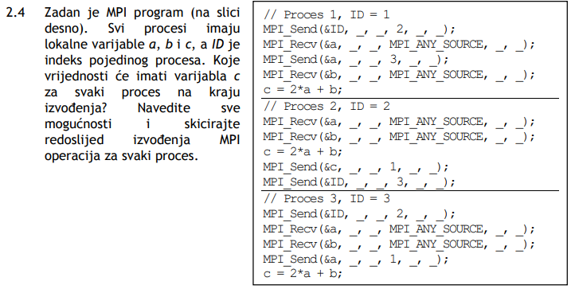
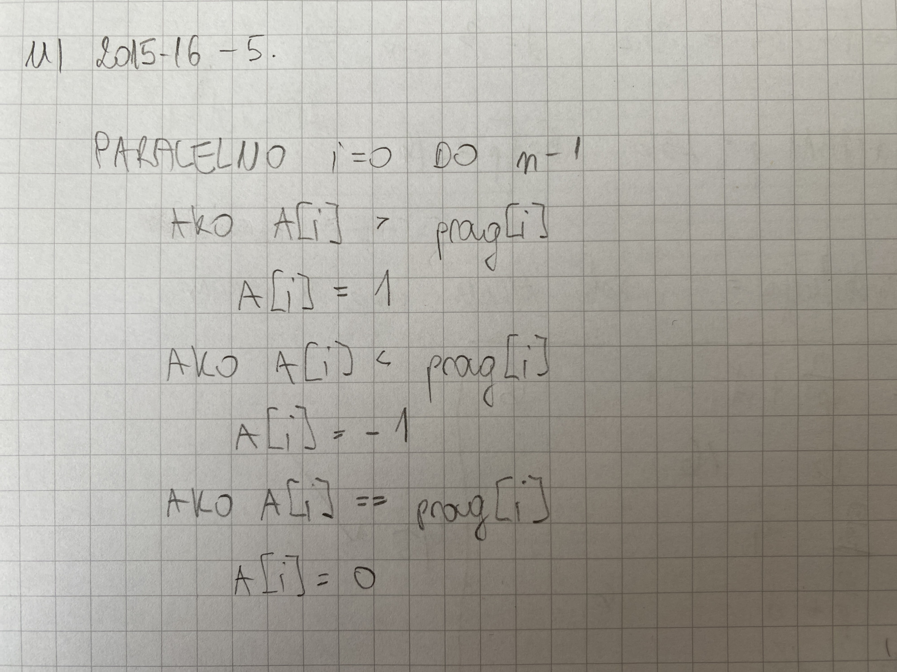
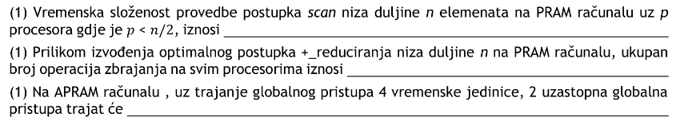

🤡 Aha da okej, tenks. Su bolja offline (starija) ili ova od prosle godine snimana na Teamsu?
Reznox koristio sam samo ove s Teamsa pa ne mogu reći
🤡 Ima sifra za pristup ili me profesor nije pozvao jer me ne voli?
anon00 Misle na snimljena predavanja iz Materijala
 Netko rješio ovaj? Ima neki elegantan način za ovo rješiti ili je brute borce jedini način?
Ne znam je li tko napisao gore već, ugl fyi kod zadataka sa pseudokodom je Jakobović reka da se isplati napisati riječima što je rješenje zadatka i ideja iza algoritma jer će ispravljači lakše pratit kod i lakše bodovati napisano.
Kako bi se rjesio 5. zadatak iz 2015-2016 MI-a? Sto znaci da je globalna varijabla, jel ju moguce istodobno citati onda?
Kennedy Slijedni algoritam bi bio O(n), ne vidim kako bi se to moglo ubrzati osim da optimisticno pretpostavimo da je prag zapravo polje gdje su vrijednosti na svim indeksima upravo jednake pragu. Evo moje rjesenje, ispravite me ako grijesim

Koliko vremena treba za spremit ovo ako jedino sto znam je MPI?
IdeGas pa nije li na tom time stampu zavrsio 5. poglavlje?
🤡 je, moj kiks
Učečuču varijablu prag je moguće proširiti u konstantno polje duljine n u O(\log n)
prag
Neko ima u skripti negdje rijesene sve ona zadatke za ponavljanje sta su dali na materijalima ?
𝐓𝐇𝐄 𝐒𝐄𝐂𝐑𝐄𝐓 - 𝐂𝐋𝐔𝐁 https://docs.google.com/document/d/1TP_lsv4lcYj9Ysbq8PiKXcNN33-9iI3UGD7H3LkDbJ0/edit?usp=sharing
Mislis na ovo?
Ima li itko materijal ili video di je lipo objašnjen Radix sort a da video ne moram brojat pixele po videu ili objasnjenje nije mentalno zaostalo?
iNut Skužija sam al sam dosl sluša samo audio i sačeka kraj di se na pola sekunde lijepo vidi ispisan cijeli postupak za paralelni radix sort. Čovik zna objasnit, al je zajebano ko ne vidiš na koji dio misli.
iNut nije li profesor rekao da je to samo primjer i da se to ne mora znati?
Učečuču My nig, meni je najbitnije bilo skužiti sve iz prve 4. cjline. Bilo teorija ili zadatci, sad koliko iz 5. uspijem uspijem. <3
 1) O(n/p + logp) 2) n-1 3) 5
moze netko pliz potvrdit jesu ovo točni odgovori?
🤡
Ja bi rekao 1) nisam siguran, za prescan bi bilo to, ali pita se za scan (iako bi onda vjv bilo 2*to pa je onda opet to) 2) da 3) da
Moze li nam se u strukturi hiperkocke dogodit potpuni zastoj, s obzirom da oba procesa prvo pozivaju send a onda recv?
him Može premda je prof. rekao da to možemo zanemariti kod zadataka ako se koristi ta struktura.